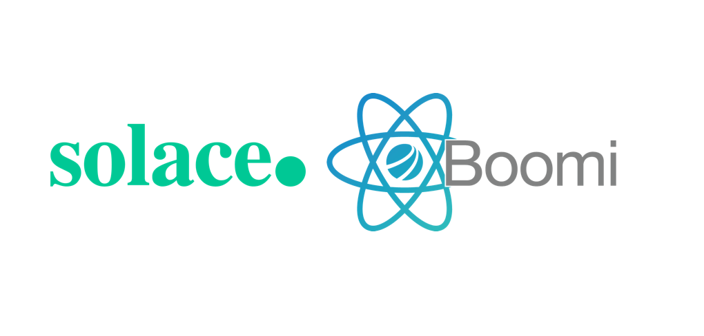
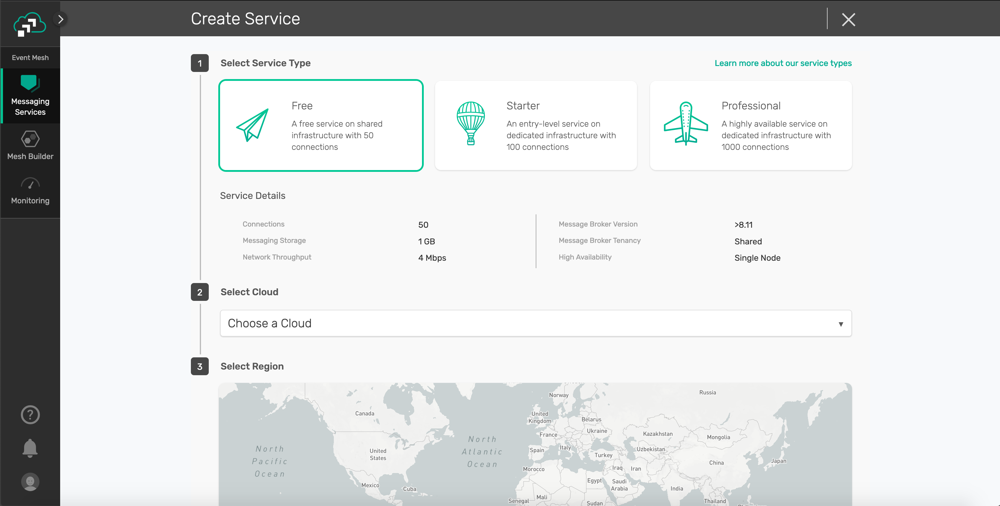
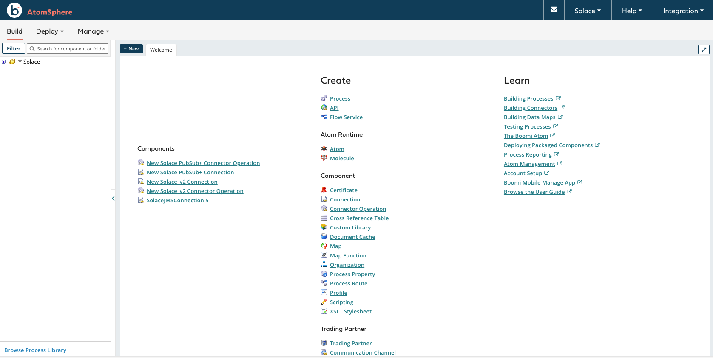
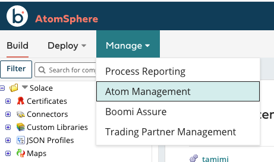

In this tutorial, you will learn how to configure and use the Solace Boomi connector. This is done in 4 easy steps
- Configure your Solace PubSub+ Event Broker (Hardware, Software, SasS)
- Setup your Boomi platform
- Configure the Solace connector in the Boomi platform
- Send/Receive messages between Boomi and Solace
Prerequisite
This tutorial assumes:
- MacOS/Linux users have knowledge using Docker
- Access to a Solace broker (explained in Step 2)
- Access to a Boomi environment (explained in Step 3)
Access to a Solace messaging service, Solace PubSub+, can be achieved in either one of the three flavours
- Hardware Appliance
- Software broker image (Docker, Virtual image)
- Solace Cloud service instance
This tutorial will walk you through setting up a Solace Cloud service instance. If you are interested in setting up a local broker running on Docker or a virtual machine check out the PubSub+ Event Broker: Software documentation
Sign up for free Solace Cloud account
Navigate to the Create a New Account page and fill out the required information. No credit card required!
Create a messaging service
After you create your Solace Cloud account and sign in to the Solace Cloud Console, you'll be routed to the event mesh page.

Click on ‘Messaging Services' and all the messaging services associated with your account will show up if you have any already created. To create a new service, click either button as depicted in the image below:

Fill out all the details for your messaging service, and then click "Create" at the bottom of the page.

Your service should be ready to use in a couple seconds! 🌪
Core concepts
Boomi builds, deploys and manage all the processes in a concept called Atoms, which is a lightweight Java application that is deployed on a host with Internet access. This of it as your single-tenant, single-node runtime engine. There are two deployment models for Atoms:
- In-the-cloud deployment (using Boomi Atom Cloud)
- On-premise deployment (using local Atom setup)

Create a Boomi trial account
if you dont have an account, navigate to https://boomi.com/form/trial/ and sign up for a free account
After you sign up for a Boomi platform account and login, you will have access to the Boomi AtomSphere platform - your one stop shop for all your integrations


- Build: This is where you design and package your process (i.e. architecture)
- Deploy: This is where you deploy the packaged process in your Atom for execution
- Manage: This is where you configure your environment and Atoms
Configure a local Atom
In this tutorial, we will be setting up a local Atom. Either follow the steps below or navigate to the links below for more information
👉 Navigate to the Manage tab and click on Atom Management

👉 Click on +New and choose Atom

👉 Choose the operating system of choice in the Atom Setup box

Notes on Docker installation
The installer is a shell script that you run locally and automatically configure your docker setup
./atomdocker_install64.sh -hfor more information on how to run it- You can generate a token by clicking on Generate Token under Security Options
- Use the generated token as follows
./atomdocker_install64.sh -n <docker_container_name> -k <isnert_token> - Create a
/var/boomidirectory because the script assumes it already exists and make sure its owned by the current user- Navigate to
/var/boomi/after you create it - Execute the following from terminal
chown $USER . - Make sure this directory is shared on docker. This is done by opening the docker preferences and adding it under File Shareing Resources tab
- Navigate to

Viola! Now you have your Solace and Boomi environment setup